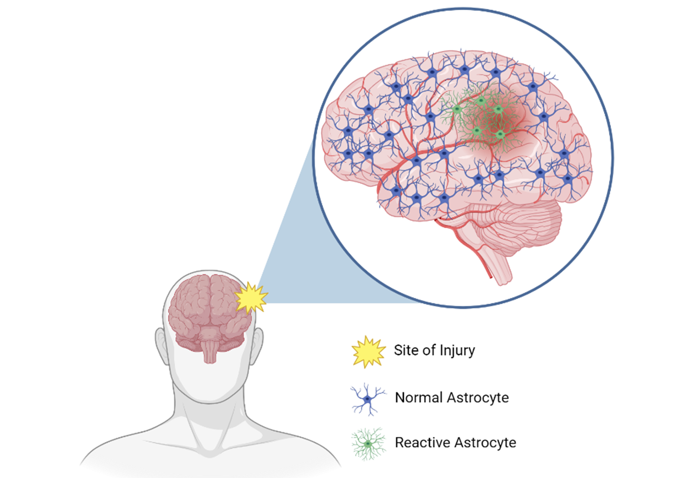
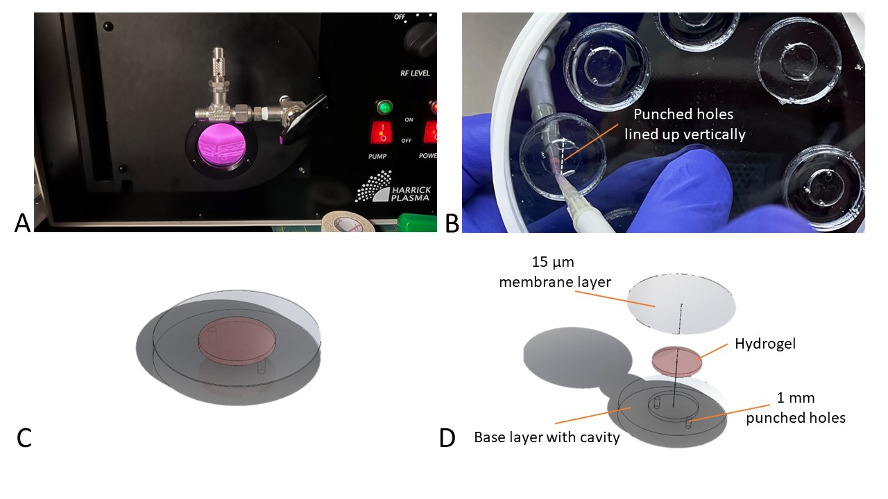
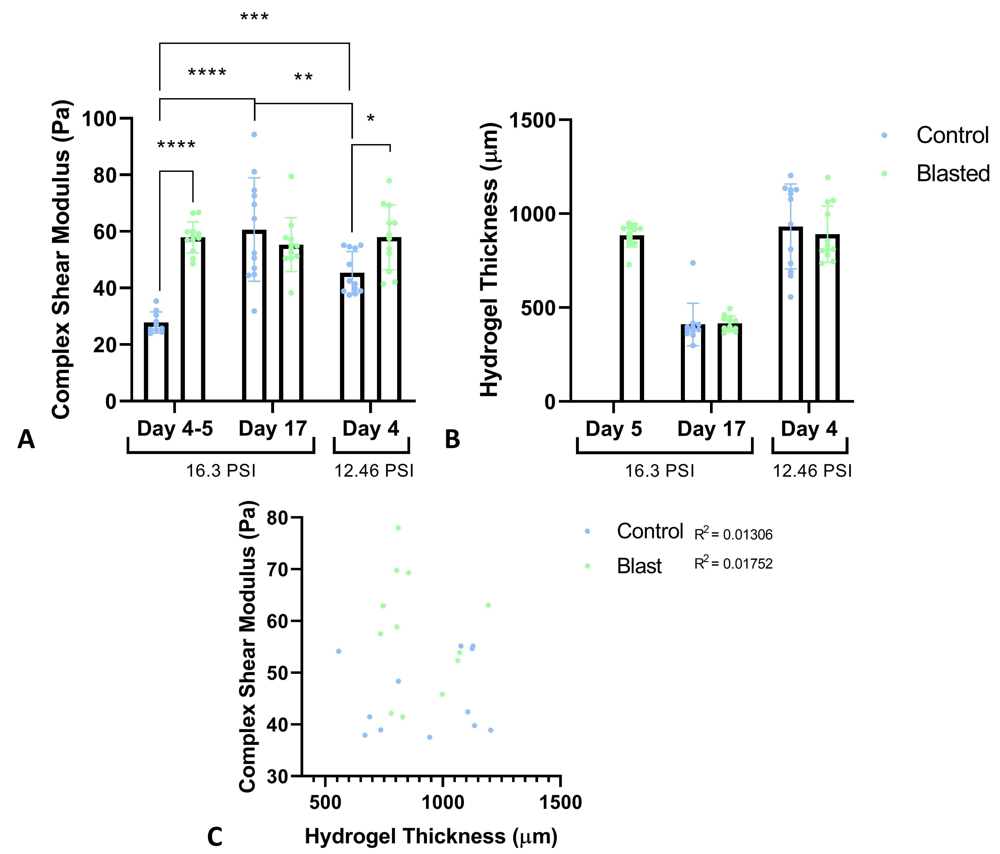

The Problem
Millions suffer mild traumatic brain injuries (concussions) each year, but we don't fully understand why some lead to long-term damage. After injury, astrocytes — the brain's most abundant cell type — become "reactive" and start remodeling the tissue around them.
The mechanical consequences of this remodeling are poorly understood, partly because existing lab models were limited to 2D cell cultures that don't replicate how cells actually behave in the brain. There was no way to simulate blast-like forces on realistic 3D brain tissue models and then measure what happened at the nanoscale.

The Approach
I designed a platform that could expose 3D cell-laden hydrogels to simulated blast overpressure, then developed methods to measure how the cells changed their environment at the nanoscale. This combined three disciplines into one integrated study:
- Tissue engineering — synthesizing collagen I-hyaluronic acid hydrogels and culturing human astrocytes in 3D scaffolds
- Mechanical engineering — developing characterization methods using atomic force microscopy (nanoindentation) and rheology (parallel plate SAOS testing)
- Cell biology — immunocytochemical staining, fluorescence microscopy, protein assays, and MMP antibody arrays


Key Findings
Reactive astrocytes actively stiffen their surrounding matrix
Hydrogels seeded with blast-exposed astrocytes exhibited consistently higher shear modulus than controls across multiple time points and blast conditions. Control hydrogels degraded over time while blasted hydrogels maintained their stiffness — indicating active ECM modulation by reactive astrocytes.

Decreased expression of critical structural proteins
Blast-exposed astrocytes showed reduced production of laminin and collagen IV — two ECM proteins essential for normal brain function. Collagen IV protects neurons from amyloid-β toxicity and supports motor/memory function. Laminin maintains structural stability. Their reduction suggests a pathway to long-term neurodegeneration.

3D culture validated as more physiologically relevant
A key methodological finding: 2D monolayer cultures showed unrealistic 3x proliferation in just 3 days, while 3D hydrogel culture maintained realistic morphology and branching patterns closer to in vivo conditions.

What This Taught Me
This project sits at the intersection of engineering and biology. It taught me to think across disciplines — designing physical platforms, running biological experiments, developing characterization methods, and analyzing complex multi-variable datasets. That cross-disciplinary instinct carries directly into every software and data problem I work on now.
Methods & Techniques
Tissue Engineering
Collagen I & collagen I-HA hydrogel synthesis, 3D cell culture, PDMS fabrication, spin coating, sterile technique
Characterization
Atomic Force Microscopy (nanoindentation, Hertz model), Rheology (parallel plate, SAOS), 3D profilometry
Biology
Immunocytochemistry (GFAP, collagen IV, laminin), fluorescence microscopy, BCA protein assay, MMP antibody array
Analysis
ImageJ, z-stack processing, unpaired t-test, 2-way ANOVA, 95% confidence intervals, quantitative fluorescence analysis